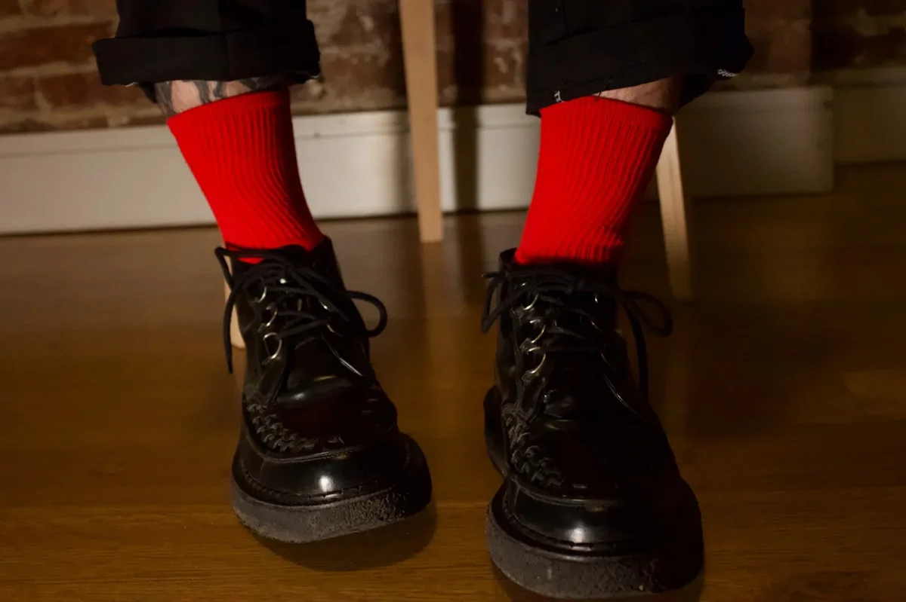
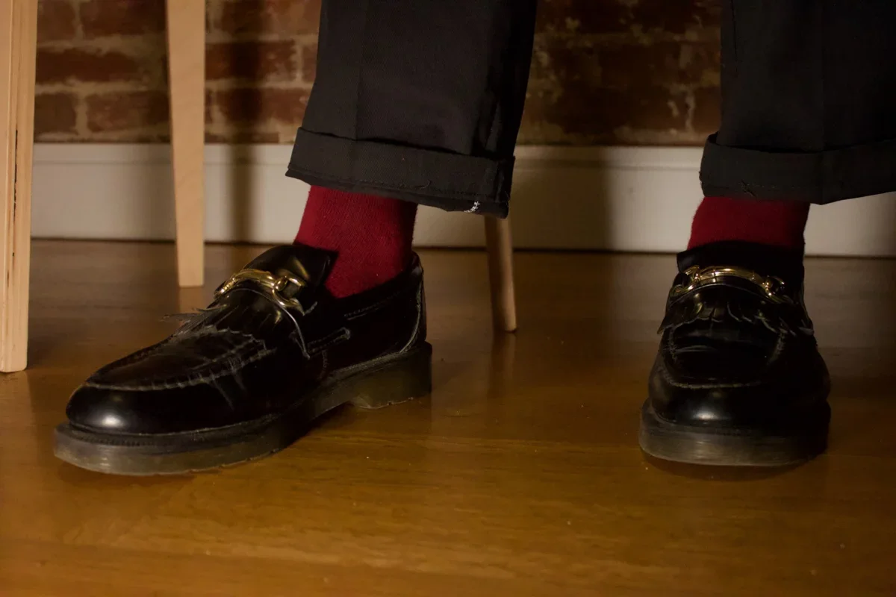

Collared Short Sleeve Shirt
This was a fun project that was a little easier than the western style shirt I had done previously. I did however agains struggle with the sleeves and so ended up cutting the sleeves off to make it a short sleeved shirt.
Fabric Store

The first step was to head to the garment district to purchase some fabric.
2. Ribbed Red Socks

The red socks cut through the dark palette with bold contrast. Paired with creepers and cuffed trousers, they feel punk, sharp, and intentional.
3. Deep Burgundy Socks

Burgundy is my go-to when I want color that doesn't clash. It adds warmth while keeping the look grounded.
Why I wear them: They're subtle. You only notice them if you're paying attention — and that’s the point.